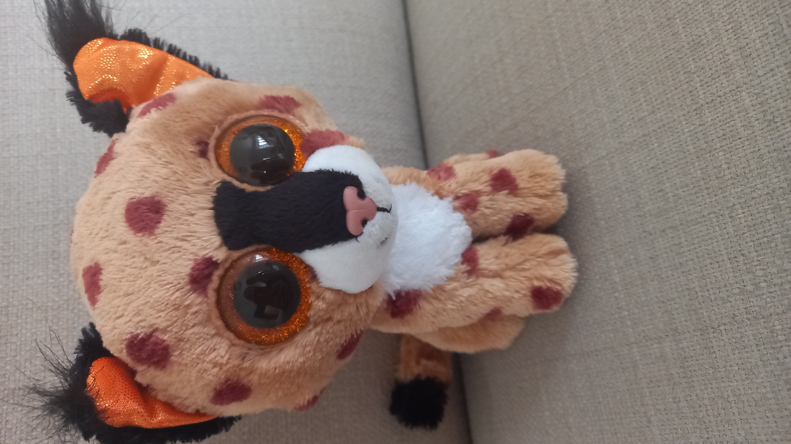

What an exceptional type of cat he is!
Buckwheat was born in 2014! He is the oldest student in his class!
He is also the only Lynx in his entire school, and the only Beanie Boo Lynx!
I guess you could say he's pretty unique.
2. He has one of the most detailed noses in the Beanie Boo world.
He is also the only Lynx in his entire school, and the only Beanie Boo Lynx!
I guess you could say he's pretty unique.
Fun Facts:
1. He's the only student in his class with long hair on their ears!
2. He has one of the most detailed noses in the Beanie Boo world.